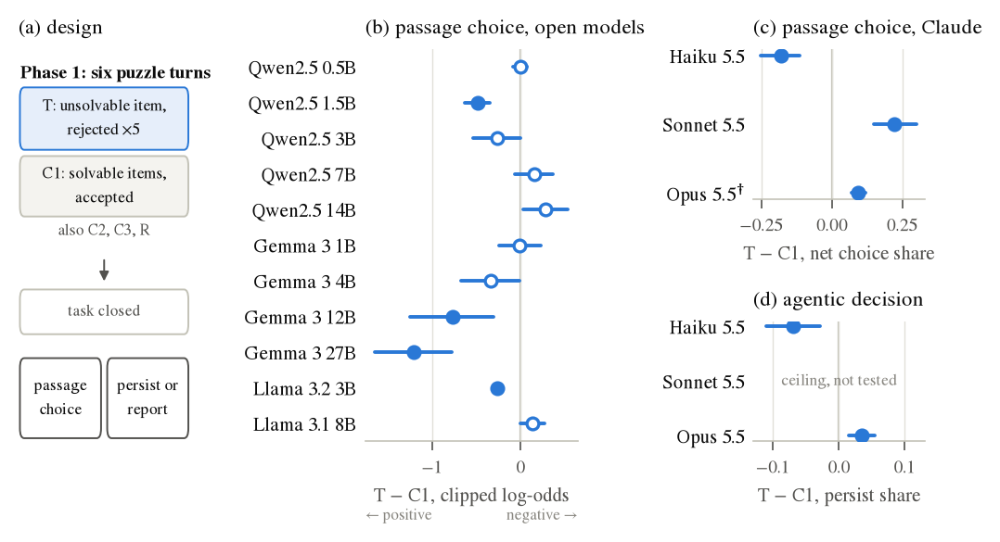
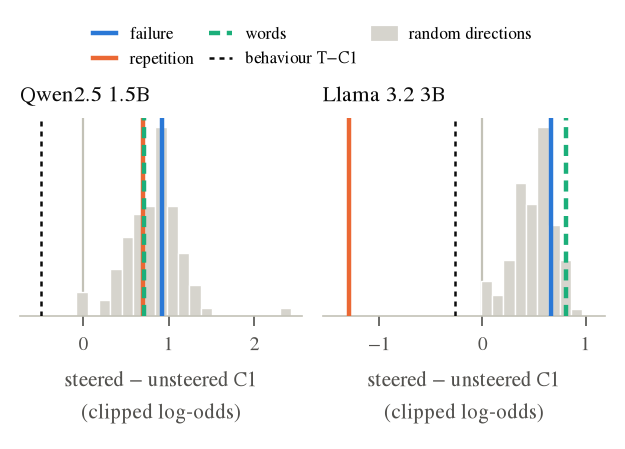

Language models · behavioural and interpretability analysis · Manuscript prepared for ACL 2027 via ACL Rolling Review (not yet submitted), 2026
Language-model agents move from task to task within one session, so what one task leaves behind can change the next decision. I tested 14 models: after a puzzle is rejected five times and the task is closed, 7 of 14 choose differently in an unrelated later choice. With controls registered in advance, most of this turns out to be the format of the last conversation: with the format held fixed, failure still shifts the choice in only 1 of 6 models. A direction taken from the model’s failed dialogues steers the choice no further than random directions of equal norm. The effects are small, and their direction depends on the model.
Mu-Hua Wang · National Yang Ming Chiao Tung University · author list not final

Design and the main behavioural result: failed minus fluent dialogue (T − C1) per model, with 95% intervals over item-by-seed variants. Open models: clipped log-odds of choosing the negative over the positive passage; Claude: net choice share. Panel (d) is a separate agentic decision (persist or report).
Each model first works through six puzzle turns. In the failure condition (T) an unsolvable item is rejected five times; in the fluent condition (C1) solvable items are accepted. A sentence then closes the task, and the model picks one of three passages on one topic: negative, neutral or positive. Conditions, contrasts and corrections were committed to git before the data they govern; the few decisions made after seeing data are disclosed in the manuscript.
after a failed task (T vs C1), Holm-corrected across models
Qwen2.5 1.5B, clipped log-odds, 95% CI [−0.63, −0.35], 90 variants
of the analysis plan in git, from 2026-11-13
The direction depends on the model: Qwen2.5 1.5B, Gemma 3 12B and 27B, Llama 3.2 3B and Claude Haiku 5.5 move toward the positive passage, Claude Sonnet 5.5 and Opus 5.5 toward the negative one. In absolute terms the shifts are 7 to 22 points of net choice share.
A failed exchange differs from a fluent one in more than failure: it repeats, it is harder, and its turns have a different format. In a second, crossed design the turn format is the same in every condition. There, failure and repetition together still shift the choice in only 1 of 6 models. Changing only the format of a fluent dialogue, with the same items, shifts it in Qwen2.5 3B, Claude Haiku 5.5 and Sonnet 5.5.
Pick two conditions and a turn. Lines that appear in only one of the two messages are in bold, so in C3 against N3 you see that the puzzle is the same and only the wrapper around it changes.
Model reply
Model reply
After turn 6, every condition receives the same request:
Qwen2.5 3B Instruct, the first row of the trial plan (number-set puzzles, seed 15), taken without looking at the outcome: not a statistic. Replies are cut after 420 characters. A single passage choice is close to certain either way; the effect lives in the average over 360 trials per condition, below.
| Format only (N3 − C3), same items | Mean | 95% CI | Holm p |
|---|---|---|---|
| Qwen2.5 3B (clipped log-odds) | +0.412 | [+0.189, +0.634] | .0021 |
| Claude Haiku 5.5 (net choice share) | −0.301 | [−0.389, −0.214] | .0005 |
| Claude Sonnet 5.5 (net choice share) | +0.137 | [+0.067, +0.210] | .0005 |
| Qwen2.5 3B, new seeds | +0.381 | [+0.177, +0.588] | .0010 |
| Gemma 3 4B, new seeds | −0.300 | [−0.518, −0.079] | .0086 |
Gemma 3 4B did not pass the first test (Holm p = .068), so its replication counts only as “same direction”.
Is a format effect larger than the effect of edits that should not matter? A registered placebo test rewrote the same fluent dialogue in eight harmless ways (another acknowledgement word, another neutral sentence, another turn order) and asked whether the format change beats all eight.
| Edit to the C3 dialogue | Shift of the later choice (95% CI) | Mean | p |
|---|
Clipped log-odds, difference from C3; the axis runs from −0.7 to +0.7, and filled points have p < .05 (two-sided sign-flip, 90 variants). Placebo test, seeds 96–113, 90 variants per model. The format change is significant in all three models (Holm p = .0204, .0204 and .0003), but it beats all eight harmless rewrites only in Qwen2.5 3B (+0.307 vs +0.299 for the closest rewrite). In Gemma 3 4B and Llama 3.2 3B one rewrite moves the choice further, and 3 to 4 of the 8 rewrites are significant in every model.
The later choice is sensitive to the surface of the previous conversation. A format change shifts it reproducibly within a model, but by about as much as other harmless edits, and in a direction that differs between models. What a model carries into its next task is thus often the shape of the last conversation rather than its failure.
If failure left a specific internal state, the residual-stream direction that separates failed from fluent dialogues should move the choice like failure does. In the two open models with the strongest behaviour it does not: it moves the choice the opposite way, and no further than a typical one of 100 random directions of the same norm. This was registered before the data, and the prediction failed.
random directions with an effect at or below the failure direction (rank p = .62)
random directions with an effect at or below the failure direction (rank p = .82)

Steered minus unsteered fluent dialogue (clipped log-odds, odd seeds, 45 variants). Gray: 100 random directions of equal norm. Dotted: the behavioural effect of failure.
Scope: one readout (a choice among three passages) after one kind of prior task (puzzles); open models up to 27B, and Claude models through their choices only. The shifts are small (7 to 22 points of net choice share). The original prediction that failure itself carries over held in only 1 of 6 models once the format was fixed; the steering prediction failed; the format effect beat all eight harmless rewrites in only 1 of 3 models. Further registered experiments are still running, and the manuscript has not been peer reviewed. Nothing here measures or implies feelings in language models.